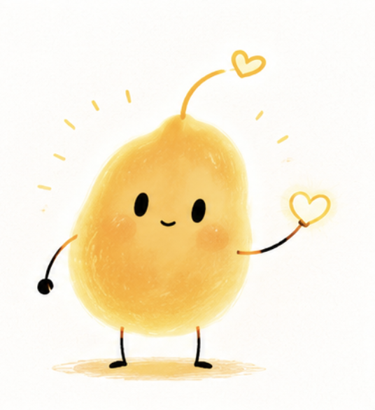
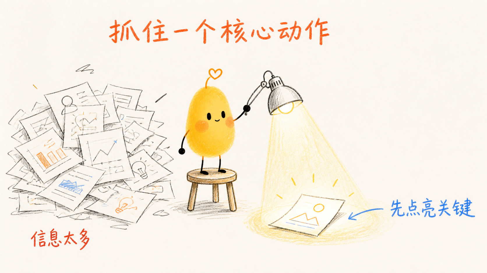
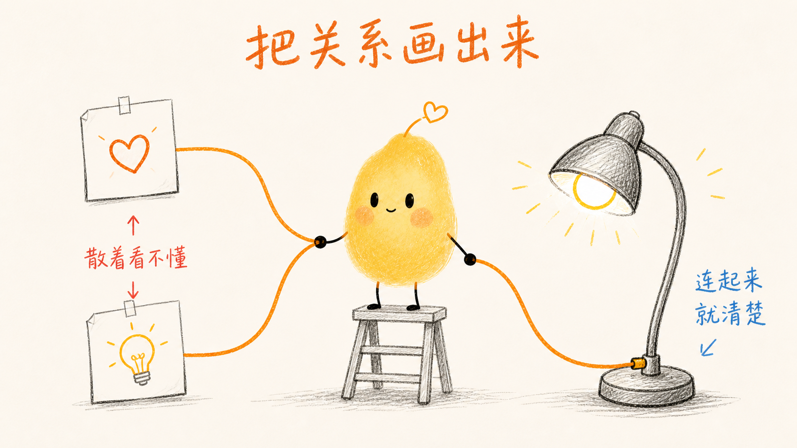
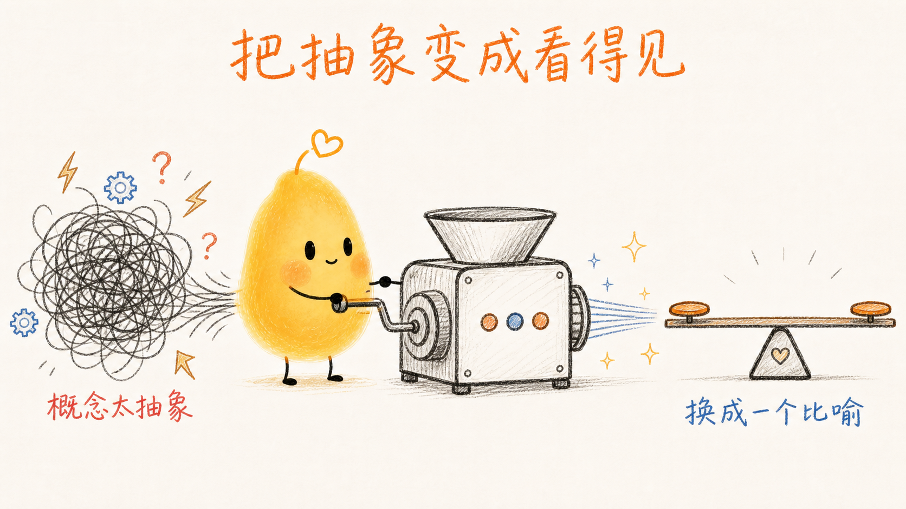

Prompt
ONE-OFF INSTRUCTION
- 一次性指令
- 依赖当前上下文
- 规则混在一起
- 结果容易漂移
- 难以维护和组合
从一个小黄 IP，到一套可以被 Codex / Agent 重复调用的视觉生成系统。
方向键 · 空格 · 滚轮 · 左右滑动

01 / The friction
THE REAL PROBLEM
问题不是 Prompt 不够长，而是缺少一套长期可复用的规则系统。
02 / The shift
ONE-OFF INSTRUCTION
REUSABLE OPERATING SYSTEM
Skill = 把经验变成 AI 可以重复执行的 SOP。
03 / Three modes
它不是 PPT 模板，也不只是一个角色提示词。仓库把稳定的视觉生产需求分成三个可以独立调用的输出模式。
生成、延展与修复小黄的标准角色资产，同时锁住身份锚点。
IDENTITY FIRST
把文章、课程、演讲或想法，转成有叙事、有动作、有语义结构的 PNG 页面图。
NARRATIVE FIRST
为文章选出真正值得解释的认知锚点，生成封面与正文配图，而不是机械配图。
ANCHOR FIRST



04 / System architecture
中心是负责判断与调度的 SKILL.md；四周是按需被读取的规则、资产和示例。点击节点查看职责。
根据用户意图决定输出模式、读取哪些文件、执行顺序、默认值、强制规则与最终交付方式。
05 / Routing, not dumping
判断用户意图，选择 Brand IP / Deck / Article Illustration，决定要读取哪些 references，并定义流程和交付边界。
它是 Router，不是知识库。
核心原则：一个文件只解决一类问题。选择任一文件，查看它在系统中的真实职责。
06 / Character DNA
可以换世界，不能换身份。
07 / Visual DNA
一致性不是每一页都长得一样，而是先把可复用的视觉不变量写进 Style Lock：画布、颜色、线条、留白、角色与文字预算全部先确定。
Canvas：标准 Deck 为 16:9，推荐 1920 × 1080；暖白背景占主导，主动作占画面 40%–60%，至少保留三分之一安静空间。
08 / Think before draw
真正的过程是逐层把内容变成一个可执行的视觉决定。图像模型在最后一段才出现。
输入可以是文章、课程、演讲提纲、产品说明，甚至一个粗略想法。
raw material抽取主题、受众、场景、核心判断、可视化关系与内容缺口。
what matters?选择教学、说服、产品解释或复盘的故事骨架；每页只讲一个判断。
story first逐页写标题、主旨、archetype、小黄动作、可见文字和图像 brief。
one idea / page根据对比、筛选、阻塞、循环、分叉或搭建等关系，选择页面结构。
relationship → layout在同一套 Style Lock 下逐张生成，再检查角色、中文、比例和整套节奏。
review as a set先思考，再画图。
09 / Semantic layout
点击任意结构，看它对应的画面动作。一页只解释一种关系。
先问：这一页要解释哪种关系？
10 / One image, step by step
ONE RAW SENTENCE
“AI Skill 的本质，是把个人经验变成机器可以重复执行的规则。”
经验 → 规则。核心不是解释 AI，而是让“从混乱到可复用”的转化可见。
选 Transformation，而不是普通流程图：画出前后两个状态和中间的搬运动作。
小黄把一堆杂乱的“经验纸条”搬进一个标记为“规则”的低科技盒子。
暖白画布、轻手绘黑线、黄色只给小黄、中文短标注、足够留白。
检查身份锚点、标注、关系是否清楚，以及它是否能和整套页面放在一起。
结果：图像不是“文章的缩略图”，而是一个能把抽象关系讲明白的视觉句子。
11 / QA is part of the skill
output-quality.md 明确把验收写进工作流：不是看一张图“还不错”就交付，而是确认每张图和整套图都稳定成立。
12 / Make your own
把你反复完成的工作拆成清晰的输入、规则、变量、示例与验收方式。你的经验，就能从“只能靠你自己讲清楚”变成“AI 可以稳定调用的工具”。
目录 · 点击任意一页跳转 · 按 O 或 Esc 关闭